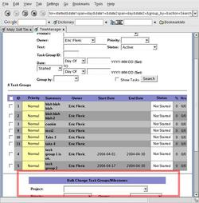
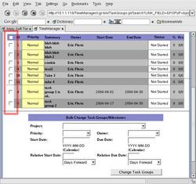
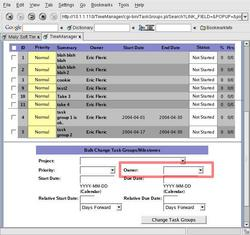
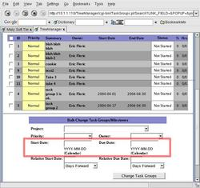
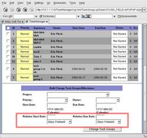

You can change multiple task groups/milestones simultaneously, such as if a project has delays. If any information is kept empty, they are ignored. Changes are committed once you click on 'Change Task Groups'.
The Bulk Changes form is available from the Task Group search page after submitting a search. It is at the bottom of the screen.
To select the task groups / milestones to change, use the checkbox to the left of the respective item. To select/deselect all, use the master checkbox next to the header fields.
To set the owner of a task group, select a value from the drop down list. Selecting 'unassigned' will remove the owner and make the task group not have one.
To set the start or due dates (to an exact, absolute date), you can either type in the numerical date, or use the calendar.
You can specify to move the task groups' start or due dates forward or backwards by a certain number of days or weeks. This proves useful when readjusting projects due to delays.
